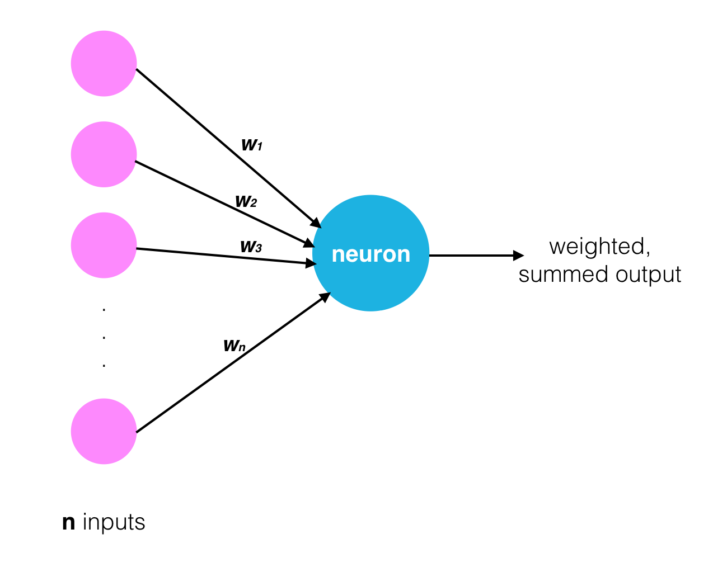
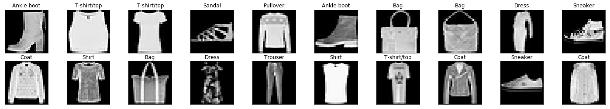
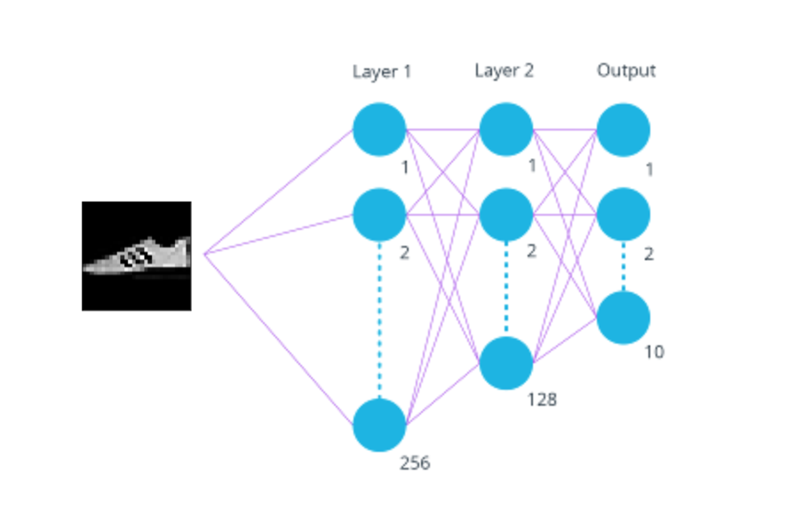
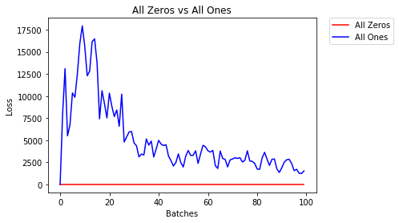
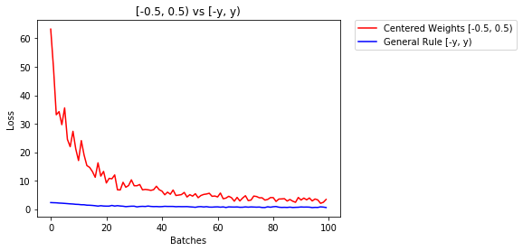
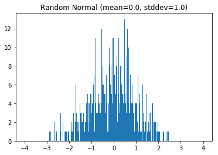
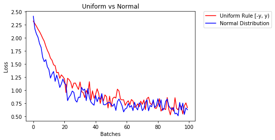

Learning different ways of weight Intialization their effects and common pitfalls.
deep-learning
Author
Aman Pandey
Published
June 24, 2021
Weight Intilization
Weight and bias intialization is one of the important factor responsible for today’s state of the art algorithm.
Weights intialization is done in random fashion but that randomness is to be tuned in various ways to get optimum result.
Pitfall: all zero initialization. Lets start with what we should not do. Note that we do not know what the final value of every weight should be in the trained network, but with proper data normalization it is reasonable to assume that approximately half of the weights will be positive and half of them will be negative. A reasonable-sounding idea then might be to set all the initial weights to zero, which we expect to be the “best guess” in expectation. This turns out to be a mistake, because if every neuron in the network computes the same output, then they will also all compute the same gradients during backpropagation and undergo the exact same parameter updates. In other words, there is no source of asymmetry between neurons if their weights are initialized to be the same.
Small random numbers. Therefore, we still want the weights to be very close to zero, but as we have argued above, not identically zero. As a solution, it is common to initialize the weights of the neurons to small numbers and refer to doing so as symmetry breaking. The idea is that the neurons are all random and unique in the beginning, so they will compute distinct updates and integrate themselves as diverse parts of the full network. The implementation for one weight matrix might look like W = 0.01* np.random.randn(D,H), where randn samples from a zero mean, unit standard deviation gaussian. With this formulation, every neuron’s weight vector is initialized as a random vector sampled from a multi-dimensional gaussian, so the neurons point in random direction in the input space. It is also possible to use small numbers drawn from a uniform distribution, but this seems to have relatively little impact on the final performance in practice.
Warning: It’s not necessarily the case that smaller numbers will work strictly better. For example, a Neural Network layer that has very small weights will during backpropagation compute very small gradients on its data (since this gradient is proportional to the value of the weights). This could greatly diminish the “gradient signal” flowing backward through a network, and could become a concern for deep networks.
Bradley (2009) found that back-propagated gradients were smaller as one moves from the output layer towards the input layer, just after initialization. He studied networks with linear activation at each layer, finding that the variance of the back-propagated gradients decreases as we go back- wards in the network. We will also start by studying the linear regime.
Calibrating the variances with 1/sqrt(n) Xavier/Glorot Initialization. One problem with the above suggestion is that the distribution of the outputs from a randomly initialized neuron has a variance that grows with the number of inputs. It turns out that we can normalize the variance of each neuron’s output to 1 by scaling its weight vector by the square root of its fan-in (i.e. its number of inputs). That is, the recommended heuristic is to initialize each neuron’s weight vector as: w = np.random.randn(n) / sqrt(n), where n is the number of its inputs. This ensures that all neurons in the network initially have approximately the same output distribution and empirically improves the rate of convergence.
The sketch of the derivation is as follows: Consider the inner product (s = _i^n w_i x_i) between the weights (w) and input (x), which gives the raw activation of a neuron before the non-linearity. We can examine the variance of (s):
where in the first 2 steps we have used properties of variance. In third step we assumed zero mean inputs and weights, so (E[x_i] = E[w_i] = 0). Note that this is not generally the case: For example ReLU units will have a positive mean. In the last step we assumed that all (w_i, x_i) are identically distributed. From this derivation we can see that if we want (s) to have the same variance as all of its inputs (x), then during initialization we should make sure that the variance of every weight (w) is (1/n). And since ((aX) = a^2(X)) for a random variable (X) and a scalar (a), this implies that we should draw from unit gaussian and then scale it by (a = ), to make its variance (1/n). This gives the initialization w = np.random.randn(n) / sqrt(nin+nout).
Sparse initialization. Another way to address the uncalibrated variances problem is to set all weight matrices to zero, but to break symmetry every neuron is randomly connected (with weights sampled from a small gaussian as above) to a fixed number of neurons below it. A typical number of neurons to connect to may be as small as 10.
Initializing the biases. It is possible and common to initialize the biases to be zero, since the asymmetry breaking is provided by the small random numbers in the weights. For ReLU non-linearities, some people like to use small constant value such as 0.01 for all biases because this ensures that all ReLU units fire in the beginning and therefore obtain and propagate some gradient. However, it is not clear if this provides a consistent improvement (in fact some results seem to indicate that this performs worse) and it is more common to simply use 0 bias initialization.
In practice, the current recommendation is to use ReLU units and use the w = np.random.randn(n) * sqrt(2.0/n), as discussed in He et al..
Why is initialization essential to deep networks? It turns out that if you do it wrong, it can lead to exploding or vanishing weights and gradients.
Vanishing Gradient In deep nueral network if sigmoid neuron is used there will be a problem of vanishing gradient because the value of sigmoid is between 0 and 1 and derivative of sigmoid is \[sigmoid(x)*(1-sigmoid(x))\] and when gradient flows backward in the network it is multiplied by subsequent wights which decreases the gradient value so the gradient to the beginning layers is very close to zero that means there is no learning. Using ReLU solves this problem.
Exploding Gradient:- Vanishing gradient is not much of a problem but in the contrary Exploding gradient is something on which we can ponder. This problem occours when weight are intialized with huge number like 10 or 100 and input to the network is not normalized. In this scenario either of these three can happen.
1. The model is unable to get traction on your training data (e.g. poor loss).
2. The model is unstable, resulting in large changes in loss from update to update.
3. The model loss goes to NaN during training.
To Solve this problem the solution given are: 1. Redesign the network In deep neural networks, exploding gradients may be addressed by redesigning the network to have fewer layers. There may also be some benefit in using a smaller batch size while training the network.
Weight Regularizers Another approach, if exploding gradients are still occurring, is to check the size of network weights and apply a penalty to the networks loss function for large weight values.
This is called weight regularization and often an L1 (absolute weights) or an L2 (squared weights) penalty can be used.
Gradient Clipping Clip the gradient before updating the weights. Either the gradient can be clipped by using l2 norm or the easiest way to clip is by values. we define a threshold value with range [-limit ,limit] if the grad value exceeds the limit we replace it with the limit value
Pytorch Supports various popular intialization type which can seen here -> https://pytorch.org/docs/stable/nn.init.html
Gradient and Weights can be tracked using TensorBoard distribution Tracking.
Random sampling using different distributions -> https://pytorch.org/docs/stable/torch.html#in-place-random-sampling
# Random sampling Techniques torch.Tensor.bernoulli_() -in-place version of torch.bernoulli() torch.Tensor.cauchy_() - numbers drawn from the Cauchy distribution torch.Tensor.exponential_() - numbers drawn from the exponential distribution torch.Tensor.geometric_() - elements drawn from the geometric distribution torch.Tensor.log_normal_() - samples from the log-normal distribution torch.Tensor.normal_() -in-place version of torch.normal() torch.Tensor.random_() - numbers sampled from the discrete uniform distribution torch.Tensor.uniform_() - numbers sampled from the continuous uniform distribution
# one example torch.randn(32,32).uniform_()
Code
from torch import nn# a simple networkmodel=nn.Sequential(nn.Linear(2, 5), nn.ReLU(),)next(model.parameters())
# initialization function, first checks the module type,# then applies the desired changes to the weightsdef init_normal(m):iftype(m) == nn.Linear: nn.init.uniform_(m.weight)elifisinstance(m , nn.Conv2d): nn.init.kaiming_normal_(m.weight)# use the modules apply function to recursively apply the initialization to every submodule.model.apply(init_normal)next(model.parameters())
Weight initialization happens once, when a model is created and before it trains. Having good initial weights can place the neural network close to the optimalsolution. This allows the neural network to come to the best solution quicker.

Initial Weights and Observing Training Loss
To see how different weights perform, we’ll test on the same dataset and neural network. That way, we know that any changes in model behavior are due to the weights and not any changing data or model structure. > We’ll instantiate at least two of the same models, with different initial weights and see how the training loss decreases over time, such as in the example below.
Sometimes the differences in training loss, over time, will be large and other times, certain weights offer only small improvements.
Dataset and Model
We’ll train an MLP to classify images from the Fashion-MNIST database to demonstrate the effect of different initial weights. As a reminder, the FashionMNIST dataset contains images of clothing types; classes = ['T-shirt/top', 'Trouser', 'Pullover', 'Dress', 'Coat', 'Sandal', 'Shirt', 'Sneaker', 'Bag', 'Ankle boot']. The images are normalized so that their pixel values are in a range [0.0 - 1.0). Run the cell below to download and load the dataset.
import torchimport numpy as npfrom torchvision import datasetsimport torchvision.transforms as transformsfrom torch.utils.data.sampler import SubsetRandomSampler# number of subprocesses to use for data loadingnum_workers =0# how many samples per batch to loadbatch_size =100# percentage of training set to use as validationvalid_size =0.2# convert data to torch.FloatTensortransform = transforms.ToTensor()# choose the training and test datasetstrain_data = datasets.FashionMNIST(root='data', train=True, download=True, transform=transform)test_data = datasets.FashionMNIST(root='data', train=False, download=True, transform=transform)# obtain training indices that will be used for validationnum_train =len(train_data)indices =list(range(num_train))np.random.shuffle(indices)split =int(np.floor(valid_size * num_train))train_idx, valid_idx = indices[split:], indices[:split]# define samplers for obtaining training and validation batchestrain_sampler = SubsetRandomSampler(train_idx)valid_sampler = SubsetRandomSampler(valid_idx)# prepare data loaders (combine dataset and sampler)train_loader = torch.utils.data.DataLoader(train_data, batch_size=batch_size, sampler=train_sampler, num_workers=num_workers)valid_loader = torch.utils.data.DataLoader(train_data, batch_size=batch_size, sampler=valid_sampler, num_workers=num_workers)test_loader = torch.utils.data.DataLoader(test_data, batch_size=batch_size, num_workers=num_workers)# specify the image classesclasses = ['T-shirt/top', 'Trouser', 'Pullover', 'Dress', 'Coat', 'Sandal', 'Shirt', 'Sneaker', 'Bag', 'Ankle boot']
Visualize Some Training Data
Code
import matplotlib.pyplot as plt%matplotlib inline# obtain one batch of training imagesdataiter =iter(train_loader)images, labels = dataiter.next()images = images.numpy()# plot the images in the batch, along with the corresponding labelsfig = plt.figure(figsize=(25, 4))for idx in np.arange(20): ax = fig.add_subplot(2, 20/2, idx+1, xticks=[], yticks=[]) ax.imshow(np.squeeze(images[idx]), cmap='gray') ax.set_title(classes[labels[idx]])

Define the Model Architecture
We’ve defined the MLP that we’ll use for classifying the dataset.
Neural Network

A 3 layer MLP with hidden dimensions of 256 and 128.
This MLP accepts a flattened image (784-value long vector) as input and produces 10 class scores as output. We’ll test the effect of different initial weights on this 3 layer neural network with ReLU activations and an Adam optimizer.
The lessons you learn apply to other neural networks, including different activations and optimizers.
Initialize Weights
Let’s start looking at some initial weights. ### All Zeros or Ones If you follow the principle of Occam’s razor, you might think setting all the weights to 0 or 1 would be the best solution. This is not the case.
With every weight the same, all the neurons at each layer are producing the same output. This makes it hard to decide which weights to adjust.
Let’s compare the loss with all ones and all zero weights by defining two models with those constant weights.
Below, we are using PyTorch’s nn.init to initialize each Linear layer with a constant weight. The init library provides a number of weight initialization functions that give you the ability to initialize the weights of each layer according to layer type.
In the case below, we look at every layer/module in our model. If it is a Linear layer (as all three layers are for this MLP), then we initialize those layer weights to be a constant_weight with bias=0 using the following code: >if isinstance(m, nn.Linear): nn.init.constant_(m.weight, constant_weight) nn.init.constant_(m.bias, 0)
The constant_weight is a value that you can pass in when you instantiate the model.
Code
import torch.nn as nnimport torch.nn.functional as F# define the NN architectureclass Net(nn.Module):def__init__(self, hidden_1=256, hidden_2=128, constant_weight=None):super(Net, self).__init__()# linear layer (784 -> hidden_1)self.fc1 = nn.Linear(28*28, hidden_1)# linear layer (hidden_1 -> hidden_2)self.fc2 = nn.Linear(hidden_1, hidden_2)# linear layer (hidden_2 -> 10)self.fc3 = nn.Linear(hidden_2, 10)# dropout layer (p=0.2)self.dropout = nn.Dropout(0.2)# initialize the weights to a specified, constant valueif(constant_weight isnotNone):for m inself.modules():ifisinstance(m, nn.Linear): nn.init.constant_(m.weight, constant_weight) nn.init.constant_(m.bias, 0)def forward(self, x):# flatten image input x = x.view(-1, 28*28)# add hidden layer, with relu activation function x = F.relu(self.fc1(x))# add dropout layer x =self.dropout(x)# add hidden layer, with relu activation function x = F.relu(self.fc2(x))# add dropout layer x =self.dropout(x)# add output layer x =self.fc3(x)return x
Code
import numpy as npimport matplotlib.pyplot as pltimport torchimport torch.nn as nnimport torch.optimdef _get_loss_acc(model, train_loader, valid_loader):""" Get losses and validation accuracy of example neural network """ n_epochs =2 learning_rate =0.001# Training loss criterion = nn.CrossEntropyLoss()# Optimizer optimizer = optimizer = torch.optim.Adam(model.parameters(), learning_rate)# Measurements used for graphing loss loss_batch = []for epoch inrange(1, n_epochs+1):# initialize var to monitor training loss train_loss =0.0#################### train the model ####################for data, target in train_loader:# clear the gradients of all optimized variables optimizer.zero_grad()# forward pass: compute predicted outputs by passing inputs to the model output = model(data)# calculate the batch loss loss = criterion(output, target)# backward pass: compute gradient of the loss with respect to model parameters loss.backward()# perform a single optimization step (parameter update) optimizer.step()# record average batch loss loss_batch.append(loss.item())# after training for 2 epochs, check validation accuracy correct =0 total =0for data, target in valid_loader:# forward pass: compute predicted outputs by passing inputs to the model output = model(data)# get the predicted class from the maximum class score _, predicted = torch.max(output.data, 1)# count up total number of correct labels# for which the predicted and true labels are equal
Compare Model Behavior
Below, we are using compare_init_weights to compare the training and validation loss for the two models we defined above, model_0 and model_1. This function takes in a list of models (each with different initial weights), the name of the plot to produce, and the training and validation dataset loaders. For each given model, it will plot the training loss for the first 100 batches and print out the validation accuracy after 2 training epochs. Note: if you’ve used a small batch_size, you may want to increase the number of epochs here to better compare how models behave after seeing a few hundred images.
We plot the loss over the first 100 batches to better judge which model weights performed better at the start of training.
Run the cell below to see the difference between weights of all zeros against all ones.
Code
# initialize two NN's with 0 and 1 constant weightsmodel_0 = Net(constant_weight=0)model_1 = Net(constant_weight=1)
Code
# put them in list form to comparemodel_list = [(model_0, 'All Zeros'), (model_1, 'All Ones')]# plot the loss over the first 100 batchescompare_init_weights(model_list, 'All Zeros vs All Ones', train_loader, valid_loader)

After 2 Epochs:
Validation Accuracy
9.675% -- All Zeros
9.675% -- All Ones
Training Loss
2.305 -- All Zeros
478.745 -- All Ones
As you can see the accuracy is close to guessing for both zeros and ones, around 10%.
The neural network is having a hard time determining which weights need to be changed, since the neurons have the same output for each layer. To avoid neurons with the same output, let’s use unique weights. We can also randomly select these weights to avoid being stuck in a local minimum for each run.
A good solution for getting these random weights is to sample from a uniform distribution.
Uniform Distribution
A uniform distribution has the equal probability of picking any number from a set of numbers. We’ll be picking from a continuous distribution, so the chance of picking the same number is low. We’ll use NumPy’s np.random.uniform function to pick random numbers from a uniform distribution.
Outputs random values from a uniform distribution.
The generated values follow a uniform distribution in the range [low, high). The lower bound minval is included in the range, while the upper bound maxval is excluded.
low: The lower bound on the range of random values to generate. Defaults to 0.
high: The upper bound on the range of random values to generate. Defaults to 1.
size: An int or tuple of ints that specify the shape of the output array.
We can visualize the uniform distribution by using a histogram. Let’s map the values from np.random_uniform(-3, 3, [1000]) to a histogram using the hist_dist function. This will be 1000 random float values from -3 to 3, excluding the value 3.
The histogram used 500 buckets for the 1000 values. Since the chance for any single bucket is the same, there should be around 2 values for each bucket. That’s exactly what we see with the histogram. Some buckets have more and some have less, but they trend around 2.
Now that you understand the uniform function, let’s use PyTorch’s nn.init to apply it to a model’s initial weights.
Uniform Initialization, Baseline
Let’s see how well the neural network trains using a uniform weight initialization, where low=0.0 and high=1.0. Below, I’ll show you another way (besides in the Net class code) to initialize the weights of a network. To define weights outside of the model definition, you can: >1. Define a function that assigns weights by the type of network layer, then 2. Apply those weights to an initialized model using model.apply(fn), which applies a function to each model layer.
This time, we’ll use weight.data.uniform_ to initialize the weights of our model, directly.
Code
# takes in a module and applies the specified weight initializationdef weights_init_uniform(m): classname = m.__class__.__name__# for every Linear layer in a model..if classname.find('Linear') !=-1:# apply a uniform distribution to the weights and a bias=0 m.weight.data.uniform_(0.0, 1.0) m.bias.data.fill_(0)
Code
# create a new model with these weightsmodel_uniform = Net()model_uniform.apply(weights_init_uniform)
After 2 Epochs:
Validation Accuracy
33.933% -- Uniform Weights
Training Loss
4.697 -- Uniform Weights
The loss graph is showing the neural network is learning, which it didn’t with all zeros or all ones. We’re headed in the right direction!
General rule for setting weights
The general rule for setting the weights in a neural network is to set them to be close to zero without being too small. >Good practice is to start your weights in the range of \([-y, y]\) where \(y=1/\sqrt{n}\)
(\(n\) is the number of inputs to a given neuron).
Let’s see if this holds true; let’s create a baseline to compare with and center our uniform range over zero by shifting it over by 0.5. This will give us the range [-0.5, 0.5).
Code
# takes in a module and applies the specified weight initializationdef weights_init_uniform_center(m): classname = m.__class__.__name__# for every Linear layer in a model..if classname.find('Linear') !=-1:# apply a centered, uniform distribution to the weights m.weight.data.uniform_(-0.5, 0.5) m.bias.data.fill_(0)# create a new model with these weightsmodel_centered = Net()model_centered.apply(weights_init_uniform_center)
Then let’s create a distribution and model that uses the general rule for weight initialization; using the range \([-y, y]\), where \(y=1/\sqrt{n}\) .
And finally, we’ll compare the two models.
Code
# takes in a module and applies the specified weight initializationdef weights_init_uniform_rule(m): classname = m.__class__.__name__# for every Linear layer in a model..if classname.find('Linear') !=-1:# get the number of the inputs n = m.in_features y =1.0/np.sqrt(n) m.weight.data.uniform_(-y, y) m.bias.data.fill_(0)# create a new model with these weightsmodel_rule = Net()model_rule.apply(weights_init_uniform_rule)
# compare these two modelsmodel_list = [(model_centered, 'Centered Weights [-0.5, 0.5)'), (model_rule, 'General Rule [-y, y)')]# evaluate behavior compare_init_weights(model_list, '[-0.5, 0.5) vs [-y, y)', train_loader, valid_loader)

After 2 Epochs:
Validation Accuracy
74.875% -- Centered Weights [-0.5, 0.5)
84.833% -- General Rule [-y, y)
Training Loss
0.789 -- Centered Weights [-0.5, 0.5)
0.487 -- General Rule [-y, y)
This behavior is really promising! Not only is the loss decreasing, but it seems to do so very quickly for our uniform weights that follow the general rule; after only two epochs we get a fairly high validation accuracy and this should give you some intuition for why starting out with the right initial weights can really help your training process!
Since the uniform distribution has the same chance to pick any value in a range, what if we used a distribution that had a higher chance of picking numbers closer to 0? Let’s look at the normal distribution.
Normal Distribution
Unlike the uniform distribution, the normal distribution has a higher likelihood of picking number close to it’s mean. To visualize it, let’s plot values from NumPy’s np.random.normal function to a histogram.
scale: The standard deviation of the normal distribution.
shape: The shape of the output array.
Code
hist_dist('Random Normal (mean=0.0, stddev=1.0)', np.random.normal(size=[1000]))

Let’s compare the normal distribution against the previous, rule-based, uniform distribution.
Below, we define a normal distribution that has a mean of 0 and a standard deviation of \(y=1/\sqrt{n}\).
Code
# takes in a module and applies the specified weight initializationdef weights_init_normal(m): classname = m.__class__.__name__# for every Linear layer in a model..if classname.find('Linear') !=-1:# get the number of the inputs n = m.in_features y = (1.0/np.sqrt(n)) m.weight.data.normal_(0, y) m.bias.data.fill_(0)
Code
# create a new model with the rule-based, uniform weightsmodel_uniform_rule = Net()model_uniform_rule.apply(weights_init_uniform_rule)# create a new model with the rule-based, NORMAL weightsmodel_normal_rule = Net()model_normal_rule.apply(weights_init_normal)
# compare the two modelsmodel_list = [(model_uniform_rule, 'Uniform Rule [-y, y)'), (model_normal_rule, 'Normal Distribution')]# evaluate behavior compare_init_weights(model_list, 'Uniform vs Normal', train_loader, valid_loader)

After 2 Epochs:
Validation Accuracy
85.442% -- Uniform Rule [-y, y)
85.233% -- Normal Distribution
Training Loss
0.318 -- Uniform Rule [-y, y)
0.333 -- Normal Distribution
The normal distribution gives us pretty similar behavior compared to the uniform distribution, in this case. This is likely because our network is so small; a larger neural network will pick more weight values from each of these distributions, magnifying the effect of both initialization styles. In general, a normal distribution will result in better performance for a model.
Automatic Initialization
Let’s quickly take a look at what happens without any explicit weight initialization.
After 2 Epochs:
Validation Accuracy
84.458% -- No Weights
Training Loss
0.530 -- No Weights
Default initialization
Something really interesting is happening here. You may notice that the red line “no weights” looks a lot like our uniformly initialized weights. It turns out that PyTorch has default weight initialization behavior for every kind of layer. You can see that linear layers are initialized with a uniform distribution (uniform weights and biases) in the module source code.
However, you can also see that the weights taken from a normal distribution are comparable, perhaps even a little better! So, it may still be useful, especially if you are trying to train the best models, to initialize the weights of a model according to rules that you define.